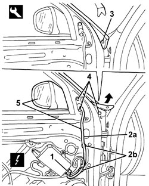

7005R30 ELECTRICALLY CONTROLLED DOOR MIRROR (ONE) - R+R
- Path
- Procedures > 70 FITTINGS > 7005 PASSENGER COMPARTMENT FRONT SIDE DOORS > 7005R FRONT DOOR MIRRORS > 7005R30 ELECTRICALLY CONTROLLED DOOR MIRROR (ONE) - R+R
- Kind
- repair procedure (removal / refitting; the operation number is the code)
- Applies to
- all engines; all production periods
- Interactive page
- https://sloeber94.github.io/elrnDB/#/939011150
Applies to: all engines; all production periods
 Removing
Removing
 Refitting
RefittingOp. 7005E12 CORNER COVER FOR ONE FRONT SIDE DOOR, LH OR RH - R.R.
Op. 7005E38 FRONT SIDE DOOR INTERIOR HANDLE- R.R.
Op. 7040E24 LOWER COURTESY LIGHT IN DOOR PANEL - R+R
Op. 7005E10 FRONT SIDE DOOR INTERIOR PANEL - R.R.
1. Disconnect the electrical connection from the control unit.
Description | Component |
|---|---|
DRIVER'S DOOR JUNCTION UNIT | |
PASSENGER SIDE DOOR JUNCTION UNIT |
2. Release the electrical cable (2a) for the rear view mirror from the retainers (2b).
3. Release the retaining button for the door seal using the special tool (replace the retaining button when refitting).
Tool | Description | Function | Validity |
|---|---|---|---|
1823015000 | Knife | Retainer removal |
4. Undo the bolts fixing the rear view mirror.
5. Remove the rear view mirror, complete with bridge, from the outside of the door.

Applies to: all engines; all production periods
Refitting
Removing- Check that the rear view mirror is not damaged.
- Place the rear view mirror with bridge in position.
- Tighten the bolts fixing the rear view mirror.
Component | Fastening | dia | Value (daNm) | Validity |
|---|---|---|---|---|
EXTERIOR REAR VIEW MIRROR | Bolt | M6x12 | 0.7 ÷ 1.1 |
- Attach the new retaining button for the door seal.
- Secure the electrical cable for the rear view mirror to the retainers.
- Connect the electrical connection to the control unit.
Op. 7005E10 FRONT SIDE DOOR INTERIOR PANEL - R.R.
Op. 7040E24 LOWER COURTESY LIGHT IN DOOR PANEL - R+R
Op. 7005E38 FRONT SIDE DOOR INTERIOR HANDLE- R.R.
Op. 7005E12 CORNER COVER FOR ONE FRONT SIDE DOOR, LH OR RH - R.R.
Topics linked from this page (6)
- 7005E10 FRONT SIDE DOOR INTERIOR PANEL - R.R.
- 7005E12 CORNER COVER FOR ONE FRONT SIDE DOOR, LH OR RH - R.R.
- 7005E38 FRONT SIDE DOOR INTERIOR HANDLE- R.R.
- 7040E24 LOWER COURTESY LIGHT IN DOOR PANEL - R+R
- M066 DRIVER'S DOOR CONTROL UNIT (NPG)
- M067 PASSENGER DOOR CONTROL UNIT (NPP)
Topics that link to this page (24)
- J042 RIGHT DOOR MIRROR ELECTRICAL ADJUSTMENT NOT WORKING
- L020 PASSENGER SIDE TEMPERATURE ADJUSTMENT DOES NOT WORK
- L021 REAR PASSENGER TEMPERATURE ADJUSTMENT NOT WORKING
- L025 AIR HEATING IS NOT ACTIVATED WITH LOW OUTSIDE TEMPERATURE
- T001 WIND NOISE FROM THE FRONT DOORS
- 7005OA FRONT DOOR NOISE LOCALISATION
- 7005D26 FRONT SIDE DESCENDING WINDOW GLASS SCRAPER (OUTER) (ONE), LEFT OR RIGHT- R.R
- 7005E50 FRONT SIDE DOOR PILLAR TRIM (ONE) LH OR RH - R.R.
- E3030 DEMISTING REARSCREEN AND REAR VIEW MIRRORS - WIRING DIAGRAM
- E3030 DEMISTING REARSCREEN AND REAR VIEW MIRRORS - COMPONENT LOCATION
- E3030 DEMISTING REARSCREEN AND REAR VIEW MIRRORS - WIRING DIAGRAM
- E3030 DEMISTING REARSCREEN AND REAR VIEW MIRRORS - COMPONENT LOCATION
- E3030 DEMISTING REARSCREEN AND REAR VIEW MIRRORS - WIRING DIAGRAM
- E3030 DEMISTING REARSCREEN AND REAR VIEW MIRRORS - COMPONENT LOCATION
- E3030 DEMISTING REARSCREEN AND REAR VIEW MIRRORS - WIRING DIAGRAM
- E3030 DEMISTING REARSCREEN AND REAR VIEW MIRRORS - COMPONENT LOCATION
- E3030 DEMISTING REARSCREEN AND REAR VIEW MIRRORS - WIRING DIAGRAM
- E3030 DEMISTING REARSCREEN AND REAR VIEW MIRRORS - COMPONENT LOCATION
- E3032 REAR VIEW MIRRORS ADJUSTMENT - WIRING DIAGRAM
- E3032 REAR VIEW MIRRORS ADJUSTMENT - COMPONENT LOCATION
- E3032 REAR VIEW MIRRORS ADJUSTMENT - WIRING DIAGRAM
- E3032 REAR VIEW MIRRORS ADJUSTMENT - COMPONENT LOCATION
- E6020 AIR CONDITIONER - WIRING DIAGRAM
- E6020 AIR CONDITIONER - COMPONENT LOCATION